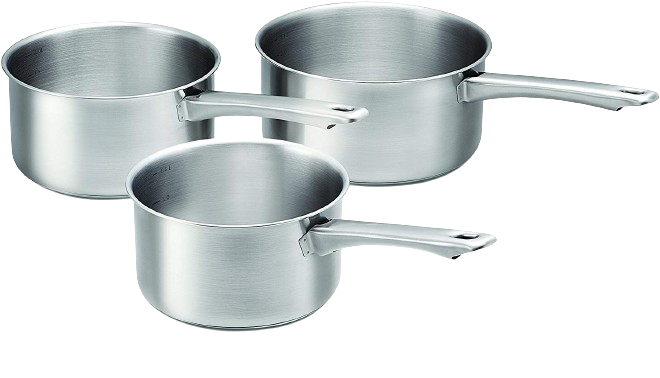

| Ingrédients | Quantités |
 Poivre Poivre |
|
 Sel Sel |
|
| Persil Haché | 1 cuillère à soupe |
 Crème Fraiche Crème Fraiche |
2 cuillère à soupe |
 Farine Farine |
2 cuillère à soupe |
 Beurre Beurre |
3 cuillère à soupe |
 Champignions Champignions |
250g |
| Bouillon | 0,25 litre |
| Ustenciles | Quantités |
| Louche | 1 |
 Mixeur Plongeant Mixeur Plongeant |
1 |
|  Casserole | 1 |
 Couvercle Couvercle |
1 |
 Cuillère en bois Cuillère en bois |
1 |
 Balance de cuisine Balance de cuisine |
1 |
| Préparation : | Repos : | Cuisson : | Temps Total : | Nombre de personne : |
| 10 min | X | 40 min | 50 min | 3 |
Faire fondre dans une casserole 3 cuillères à soupe de beurre.
Ajouter un petit oignon haché et les champignons de Paris coupés en tout petits morceaux. 
Saler, poivrer, saupoudrer d’une cuillère à soupe de persil haché.
Remuer bien les champignons dans le beurre chaud. Couvrir et laisser cuire à feu doux 1/4 heure.
Ajouter alors 2 cuillères à soupe de farine en remuant sans cesse. Ajouter 1/4 litre de bouillon (ou d’eau) et 1/2 litre de lait. 
Faire cuire à feu doux en remuant de temps en temps.
Lorsque le potage commence à bouillir, baisser le feu et laisser cuire à découvert encore 1/4 d’heure.
Quelques minutes avant de servir ajouter le jus d’un citron puis 2 cuillères à soupe de crème fraîche.